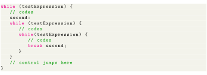
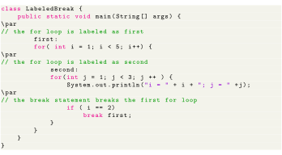
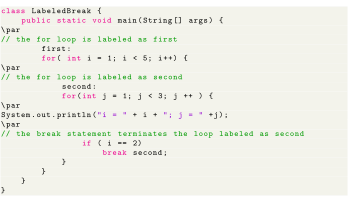
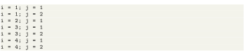

Next: Java continue Statement Up: Java break Statement Previous: Java break Statement Contents
Till now, we have used the unlabeled break statement. It terminates the innermost loop and switch statement. However, there is another form of break statement in Java known as the labeled break. We can use the labeled break statement to terminate the outermost loop as well.
As you can see in the above image, we have used the label identifier to specify the outer loop. Now, notice how the break statement is used (break label;). Here, the break statement is terminating the labeled statement (i.e. outer loop). Then, the control of the program jumps to the statement after the labeled statement. Here's another example:

In the above example, when the statement break second; is executed, the while loop labeled as second is terminated. And, the control of the program moves to the statement after the second while loop.

Output:

In the above example, the labeled break statement is used to terminate the loop labeled as first. That is,

Here, if we change the statement break first; to break second; the program will behave differently. In this case, for loop labeled as second will be terminated. For example,

Output:
